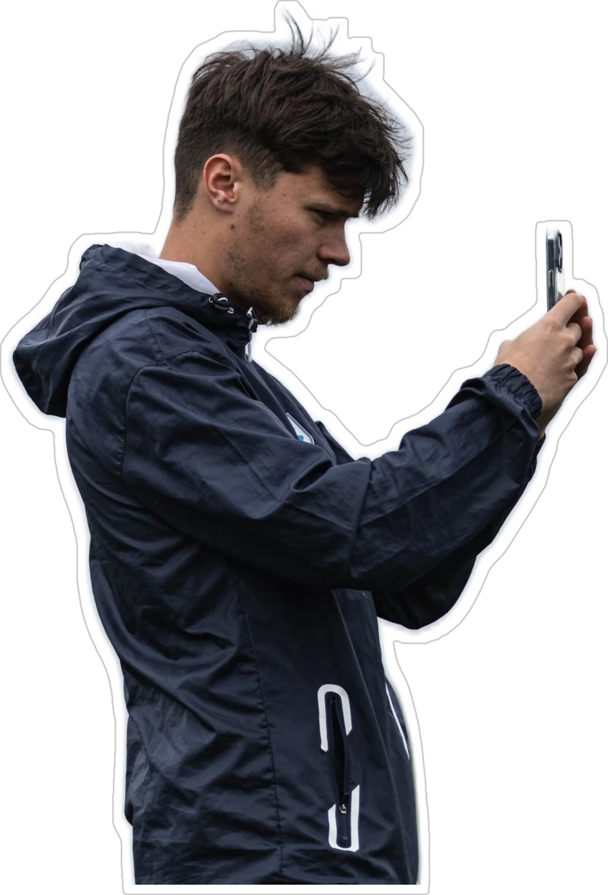

Stratégie de communication
Objectifs, publics, messages et calendrier éditorial. Un plan clair que vous et votre équipe pouvez suivre au quotidien.
Chargé de communication et photographe. Je construis la stratégie, la charte et les contenus de vos réseaux sociaux, puis je les tiens dans la durée.
Titulaire d'un master en communication, je suis aujourd'hui basé à Paris. Le sport m'accompagne partout : j'ai longtemps joué au football, et aujourd'hui je cours en trail.
Ce que j'aime dans la communication, c'est accompagner une marque et apprendre à chaque projet. Chaque client m'ouvre un sujet que je ne connaissais pas, et c'est ce qui me fait avancer.

Un club de football, une banque régionale, un club omnisports historique. Trois univers où j'ai posé une stratégie et je l'ai tenue.
De l'expérimentation à une identité structurée, et l'organisation d'un 32e de finale de Coupe de France face à un club de Ligue 2.
Voir le projet → Banque · 2025Communication institutionnelle au siège régional de Bordeaux : supports, audiovisuel et campagnes.
Voir le projet → Omnisports · En coursRéseaux sociaux, communication interne et couverture des événements du club.
Voir le projet →Deux saisons pour passer de l'expérimentation à une identité structurée, appliquée sur tous les supports du club.
Le club venait de recruter deux alternants pour ses réseaux sociaux : Hugo Kingue et moi. Notre point de départ était simple : le SAM jouait au plus haut niveau amateur, mais sa communication n'était pas encore à la hauteur de ses résultats sportifs. Il fallait la construire, puis vérifier qu'elle plaisait vraiment.
Seul club amateur de Nouvelle-Aquitaine avec des U17 et des U19 en championnat national, des équipes jeunes au meilleur niveau régional et des anciens joueurs passés chez les pros. La matière existait, il fallait la raconter.
J'ai comparé le SAM aux deux clubs les plus proches en taille et en niveau. Ils avaient plus de partenaires, un site plus vivant ou une boutique en ligne. La communication devenait un levier pour garder notre place face à eux.
Le vrai enjeu du club : créer un lien solide entre les licenciés, les familles, les supporters et le stade du Jard.
Les affiches de la plaine du Jard devaient suivre la charte de l'omnisport. Notre liberté créative se jouait donc sur les réseaux.
Chaque jour avait son rendez-vous. Tout était publié à 18 h, l'horaire où notre communauté était la plus présente.
Les éducateurs nous envoyaient les scores dans un groupe dédié. Les familles retrouvaient tout au même endroit.
Les photos des bénévoles mettaient en valeur le week-end et les remerciaient au passage. Ces jours plus calmes servaient aussi aux stages et aux détections.
Publié assez tôt pour que les familles et les spectateurs puissent s'organiser.
U17 et U19 nationaux, seniors masculins et féminines : donner envie de venir au stade.
Compositions et live des matchs, mais seulement à l'extérieur. Pour vivre un match à domicile, il faut venir au Jard.
Des challenges avec les joueurs (barre transversale, jongles, frappes) et des « Insides » qui suivaient une équipe pendant tout un week-end, du trajet au vestiaire. Chaque soir, une story mettait aussi un entraînement en avant.
Chaque carrousel s'ouvrait sur la photo d'un licencié, puis le contenu arrivait au glissement. La publication était vue deux fois au lieu d'une, et les joueurs se reconnaissaient dans le fil du club.
Les réseaux pour la communauté, le site pour les non-licenciés (détections, stages, inscriptions) et LinkedIn pour les actions RSO et les partenaires.
Cette première saison nous a appris quels formats fonctionnaient, lesquels laisser de côté, et combien de temps coûtait chaque type de contenu.
Après deux mois, puis en fin de saison, nous avons interrogé joueurs, éducateurs et supporters pour savoir quoi garder et quoi changer.
« J'aime bien quand vous venez nous filmer aux entraînements et quand il y a des lives le week-end pour les équipes à l'extérieur, comme ça on connaît le résultat en direct. »Réponse au questionnaire envoyé aux licenciés
Trois recommandations présentées à la direction du club, chacune avec un objectif, un rétroplanning, un budget et des indicateurs de suivi.
Le site, ouvert à tous en permanence, était la porte d'entrée des futurs licenciés.
Les championnats nationaux U17 et U19 intéressent des passionnés dans toute la France.
Des joueurs fiers de leur club, et des spectateurs qui ont envie de rester après le match.
Ces enseignements ont servi de base à la direction artistique et à la charte que j'ai créées seul la saison suivante.
Pour la deuxième saison, j'étais seul aux commandes. Deux défis m'attendaient : tenir le même rythme de publication sans binôme, et garder des réseaux vivants et positifs pendant une saison sportive difficile.
Le travail de la première saison avait installé des habitudes : les licenciés et les supporters suivaient le club. Il fallait continuer à les informer, mais aussi continuer à les surprendre.
Les U17 et les U19 nationaux restaient une vitrine en France. Mais un club voisin brillait lui aussi en U17 nationaux et captait une partie de l'attention.
Les U17 et les U19 sont descendus de leur championnat national, et les seniors ont manqué la montée en National 3 lors de la dernière journée.
Réseaux sociaux, affiches, vie du club : sans binôme, la question du temps de production devenait centrale.
Une identité reconnaissable, et des visuels plus rapides à produire seul.
Une des recommandations de ma première saison, devenue réalité.
Communiquer quand les résultats ne suivent pas, sans perdre la communauté.
Une charte bien pensée, c'est du temps gagné chaque semaine et une cohérence que la communauté remarque. Et la communication d'un club ne se juge pas seulement les saisons où tout va bien : c'est quand les résultats manquent qu'il faut le plus faire vivre le lien avec les supporters.
Un club amateur de Régional 1 qui reçoit le Stade Lavallois, pensionnaire de Ligue 2, avec le match retransmis à la télévision. J'avais trois semaines pour remplir le stade, mobiliser toute la communauté du club et accueillir la presse dans les règles de la Fédération.
Chaque publication avait un rôle précis dans la montée en puissance. Le digital et le terrain avançaient ensemble.
Avant de vendre un billet, il fallait que les supporters réalisent qu'un moment historique arrivait.
Le cœur de l'objectif : convertir l'enthousiasme en billets vendus, en ligne comme au guichet.
La dernière semaine sert à garder l'élan jusqu'au coup d'envoi et à donner une raison de venir tôt.
« Pierre était réactif et présent pour nous, ce qui n'est pas le cas sur tous les événements. »Réponse anonyme au questionnaire envoyé à la presse après le match
Deux points que je travaillerais différemment : préparer à l'avance les contenus d'après-match et les remerciements, pour prolonger l'élan dans les jours suivants, et répartir la montée en puissance plus régulièrement sur la dernière semaine.
Communiquer pour une banque régionale : des messages encadrés, des publics variés et beaucoup d'image.
À la Caisse d'Epargne, je ne parlais plus à des supporters mais aux clients, aux sociétaires, aux commerçants et aux associations de toute une région. Le défi : faire vivre des sujets très différents, du sport de haut niveau à l'épargne responsable, en restant fidèle à une charte de marque nationale très encadrée.
Mettre en avant les athlètes soutenus par la banque dans le cadre du Pacte de Performance : une médaille d'or en boxe, un triple podium en para natation. Des visuels à chaud, publiés dès le résultat, dans les codes graphiques de la marque.
Promouvoir « Les Étoiles du commerce et de l'artisanat », un concours qui récompense des artisans et commerçants de chaque département, avec un partenaire local. L'enjeu : donner envie de candidater.
Valoriser le Livret Transition Territoire, un livret 100 % régional qui finance des projets locaux de transition environnementale. Pour son premier anniversaire, un message court et direct, centré sur son impact.
Accompagner le lancement du Club des sociétaires, qui réunit les avantages réservés aux clients sociétaires de la banque.
Relayer le soutien de la banque à l'association Ruban Rose pendant Octobre Rose, avec un carrousel pédagogique qui explique pourquoi donner.
Le suivi des initiatives sportives de la banque, comme Piscine de Demain et un club sponsorisé, avec des photos, des vidéos, des interviews et des reportages.
Travailler dans une charte nationale stricte oblige à trouver la créativité ailleurs : dans le choix du sujet, le bon moment de publication et la façon de raconter. Et un même compte peut parler à des publics très différents, à condition d'adapter le ton à chaque message.
Ma mission actuelle : les réseaux sociaux du club, ses événements et la communication interne, avec une nouvelle direction artistique en préparation pour la saison prochaine.
Faire vivre toutes les sections d'un club omnisports sur un même compte, aux couleurs du club :
Les messages à destination de tous les salariés, et la communication du CSE.
Une nouvelle direction artistique, lancée avec la prochaine saison pour garder une identité cohérente d'un bout à l'autre.
Les événements du club que j'ai couverts en tant que photographe.
J'accompagne les entreprises, start-up, clubs et associations sur leur communication globale, avec un cœur de métier : les réseaux sociaux, construits sur une vraie stratégie.
Objectifs, publics, messages et calendrier éditorial. Un plan clair que vous et votre équipe pouvez suivre au quotidien.
Une identité visuelle cohérente et des gabarits prêts à l'emploi, pour produire plus vite sans perdre en qualité.
Instagram, Facebook, LinkedIn, TikTok, YouTube. Création des visuels sur la suite Adobe, publication et suivi des résultats.
Chaque pièce à sa place : stratégie, charte et contenus s'emboîtent.
Matchs, événements, produits. Chaque série garde la trace d'un moment, du premier échauffement à la dernière accolade.
Événement sportif, musical, séminaire ou autre ?Je suis disponible pour couvrir vos événements.
Proposer un événementDécrivez votre besoin en quelques lignes. Je vous réponds sous 48 heures.